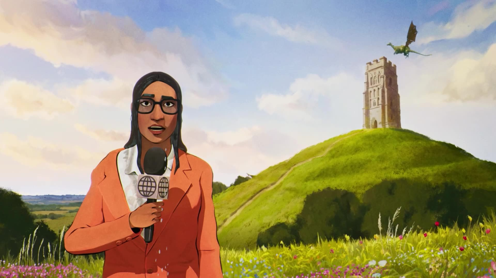
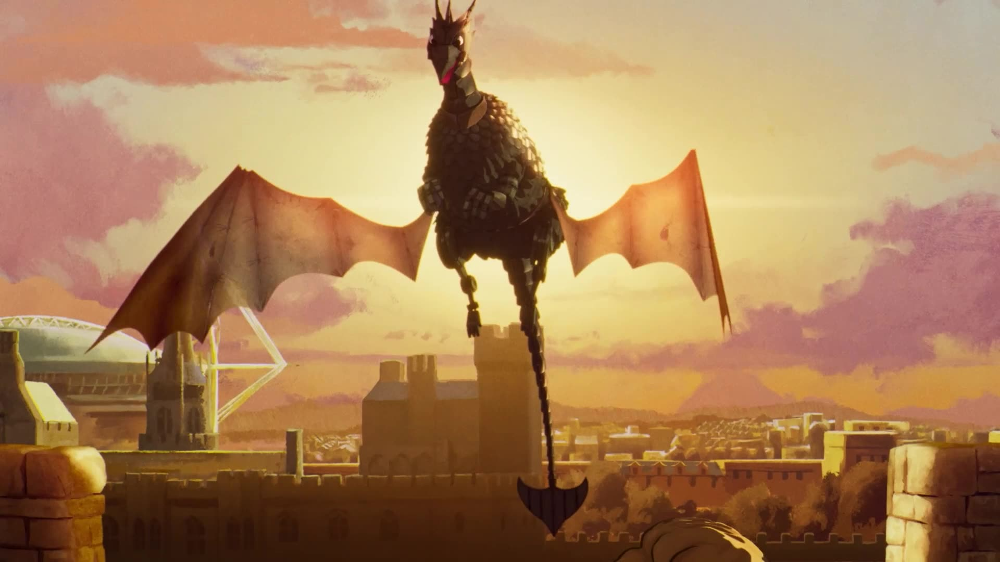
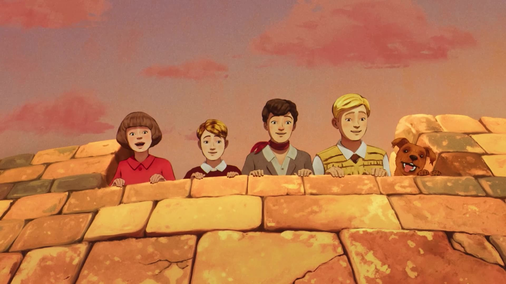

For the latest chapter of GWR’s award-winning Famous Five brand platform, I managed the finishing and multi-platform delivery, ensuring Peter Baynton’s signature animation style translated seamlessly from the 60-second hero film to the raw media booking deliverables for this campaign.



My role focused on the technical knowledge and creative adaption required for the media plan, including overseeing the final conform, color consistency, and versioning for Cinema, TV, and VOD. Beyond the hero film, I coordinated the delivery of bespoke social cut-downs and dynamic OOH assets, maintaining the campaign’s premium aesthetic across every touchpoint to ensure the "legendary adventures" felt as vivid on a smartphone as they did on the big screen. The campaign was Produced by the wonderful production team at adam&eveDDB and led by the ever on-it Charlotte Ellison. Always a lovely moment to help deliver a campaign which I’ve previously helped produce in the past.
Agency: adam&eveDDB
Creatives: Ben Tollet & Ben Polkinghorne
Director: Peter Baynton via Not To Scale
Agency Producer: Charlotte Ellison
Post-Producer: Richard Bailey
Account Team: Minty Moore & Renee James